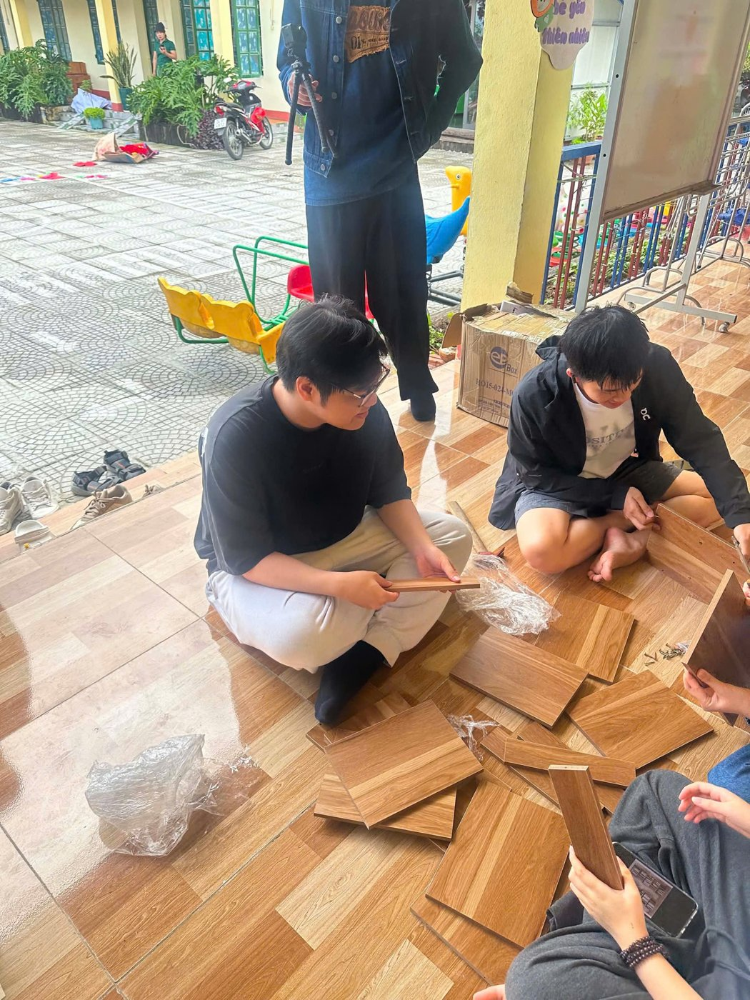
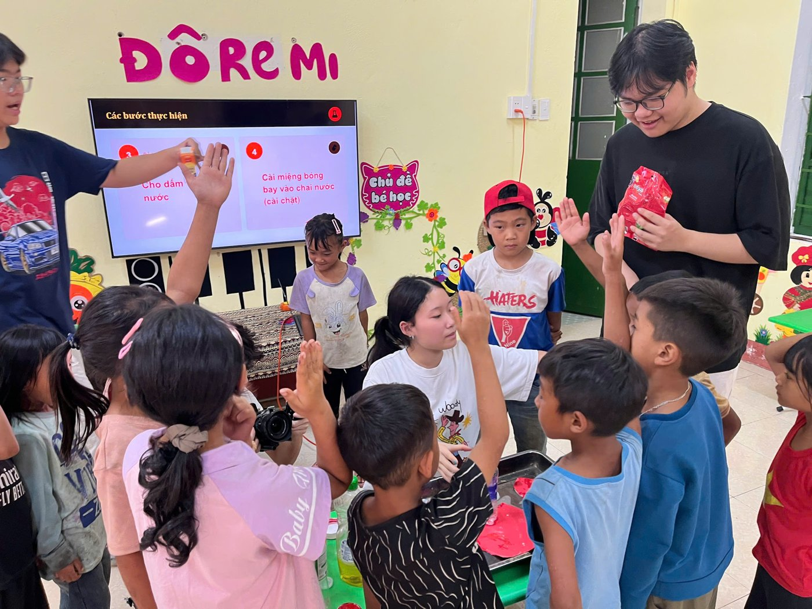
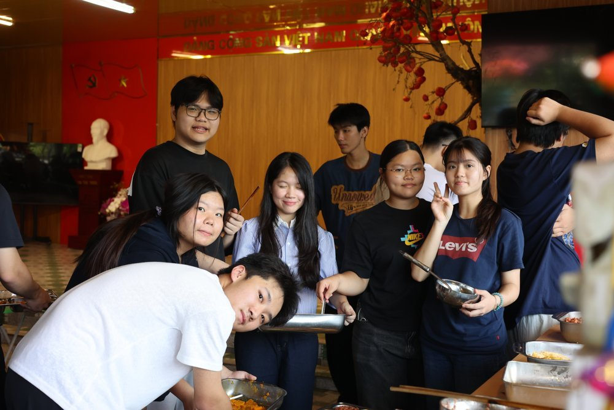

About
Ngô Minh Khôi is a student at THPT Chuyên Khoa học Tự nhiên (Hanoi National University High School for Gifted Students). This portfolio is being built up as his extracurricular projects and achievements are completed and documented — content is added only once it's real and verified.
Current project
INOVA CS track. Started with embedded-systems fundamentals — interfacing a 16x2 LCD display with Arduino over I2C (from August 22, 2026). On September 19, 2026 the project direction was set: a fintech / business-analytics topic on financial literacy education and predatory ("black credit") loan awareness for Gen Z.
Build, results, and any competition entry will be added here once the product is complete.
Community volunteering
Helped assemble and install furniture — including a wooden bookshelf — and ran a hands-on science activity for children at a rural kindergarten classroom, as part of a student volunteer trip.



Awards & certificates
No competition results or certificates have been documented yet. This section will be filled in as real, verified material becomes available — nothing here is invented.